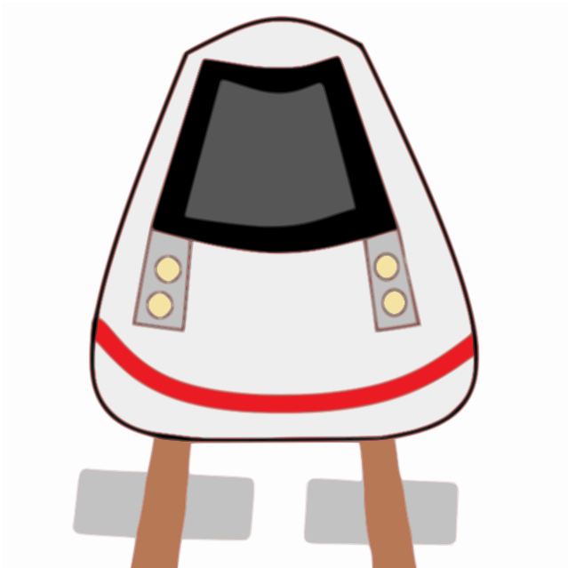

JUNA
Tämä nettisivu on nettisivu, joka kertoo Junista sekä vuoden 2008 Kiinan maitojauheskandaalista
Junat ovat ihania

Kuva kauniista junasta
Tämä nettisivu on nettisivu, joka kertoo Junista sekä vuoden 2008 Kiinan maitojauheskandaalista
Junat ovat ihania
Kuva kauniista junasta